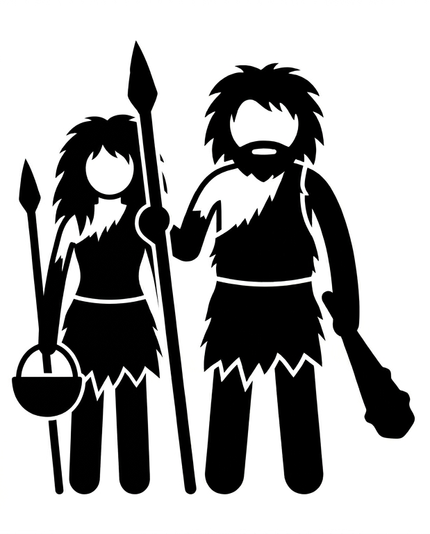

Cómo el uso del tiempo en sociedades industrializadas se desvía del patrón conductual que caracterizó a nuestra especie durante cientos de miles de años.
En zoología, el enriquecimiento ambiental evalúa si un animal en cautiverio logra expresar sus conductas naturales: explorar, socializar, descansar, jugar. Cuando no las expresa, se habla de un déficit conductual.
¿Qué pasa si aplicamos la misma lógica a nosotros? Los datos antropológicos de sociedades cazadoras-recolectoras —nuestro modo de vida durante el 95% de la historia humana— ofrecen una referencia de cómo distribuimos naturalmente nuestro tiempo. Los datos de la OCDE muestran cómo lo hacemos hoy.
Diferencia entre el Humano prehistorico y el Humano moderno.

MODERNO Promedios OCDE calculados a partir del OECD Time Use Database (30 países, población 15–64), complementados con datos de Our World in Data y la American Time Use Survey (BLS). Los valores representan promedios ponderados entre hombres y mujeres.
CAZADOR-RECOLECTOR Estimaciones basadas en estudios etnográficos cuantitativos: Lee (1968) sobre los !Kung San; Dyble et al. (2019) sobre los Agta de Filipinas; Yetish et al. (2015) sobre sueño en Hadza, San y Tsimane; Pontzer et al. (2012) sobre gasto energético Hadza; Sahlins (1972) y Marlowe (2010) sobre presupuestos de tiempo. Los valores son estimaciones centrales de múltiples fuentes.
NOTA Las categorías se homologaron para permitir la comparación. El tiempo de cazadores-recolectores incluye actividades simultáneas (p.ej., socialización durante el trabajo) que los diarios de tiempo modernos registran como actividad primaria única. Las cifras de "movimiento activo" para modernos incluyen ejercicio deliberado y transporte activo; para cazadores-recolectores, la actividad física está integrada en la subsistencia y el transporte.